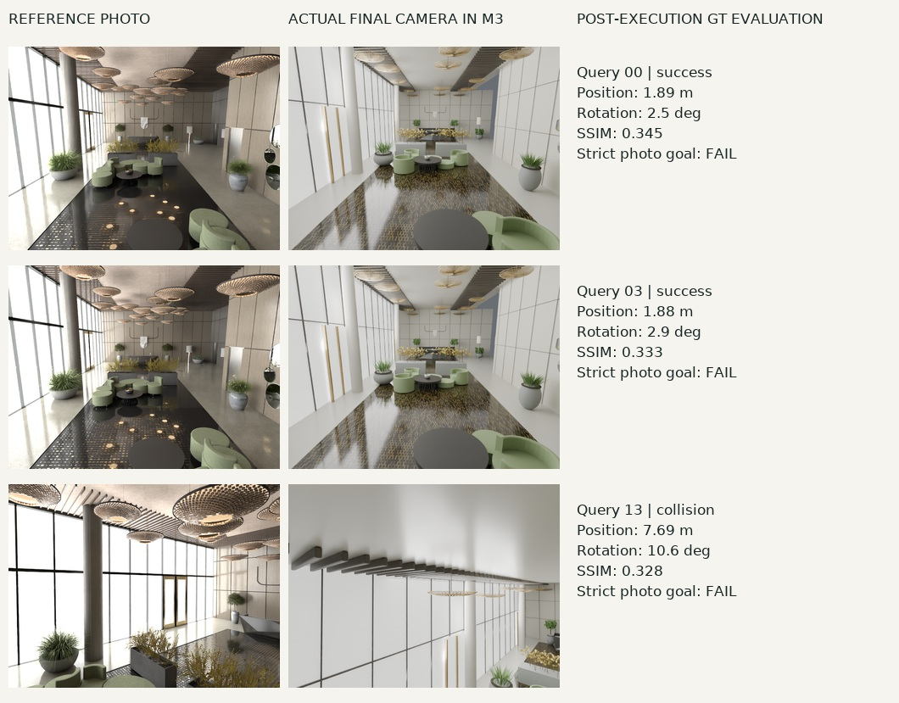

一张三维地图，能不能同时成为设计文件、几何测量结果和机器人的工作环境？
我们让 GPT‑6 Astra 读取图像和不同精度的几何信息，调用 Blender 从空场景构造对象，再通过渲染检查和独立审查修订。输出包含可编辑几何、材质、对象名称、空间关系、相机和碰撞代理。它使一个具体的新工作流成为可能：用语言和程序组织场景，用测量约束场景，再让任务检验场景。
这次实验得到两个并存的结果。通用视觉编程模型能够把观测变成结构化、可运行的三维资产；它仍会继承上游定位错误，并生成看起来合理却与原场景不一致的结构。 给定 GT 相机位姿时，模型到 GT 的平均表面距离为 6.9 cm；使用本次 OpenVINS 轨迹时，这一误差为 45.9 cm。后者支持了部分 G1 导航，却没有完成准确的无人机复拍。
我们将这些差异连同失败一起公开。所有数字来自一个静态仿真大厅、每条路线一次工程运行。它们可以解释这个案例，尚不足以证明跨场景优势或行业替代。
从同一段视频出发
数据来自 World Lobby 仿真场景：约 360 秒、8,999 帧 1280×960 RGB、89,999 个同步 IMU 样本。RGB 为 25 Hz，IMU 为 250 Hz。我们每 50 帧取一张，形成 180 个建模视角。
仿真提供了可检查的相机和几何真值，但这些答案不默认开放给建模器。M2、M3、M4 分别由干净的 Astra 会话建模，只读取各自输入包；M4 额外获得 GT 相机位姿。GT 网格和深度只进入冻结后的评价器。历史纯视觉 M1 保持原样，预算与新运行并不相同。

| 方法 | 允许输入 | 几何来源 | Astra / Blender 的工作 |
|---|---|---|---|
| M1 纯视觉 | 180 张采样 RGB | 视觉推断，无测量尺度 | 推断布局，编写对象与材质 |
| M2 ViPE | 完整视频，再选取 180 帧几何 | ViPE 相机位姿与近米制深度 | 将测量组织为对象化场景 |
| M3 惯性约束 | 视频、IMU、相机–IMU 标定 | OpenVINS 米制位姿 → MapAnything 深度 | 结合图像、位姿、深度建模 |
| M4 已知位姿 | 视频及 GT camera pose | GT 位姿 → MapAnything 深度 | 与 M3 相同类型的建模流程 |
M1 检验图像理解能走多远。 没有外部深度和相机轨迹，尺寸属于视觉推断。展示时使用一次公开的 GT 辅助 Sim(3) 配准，其中尺度约为 0.690；这不构成米制尺度恢复。
M2 引入视频几何。 ViPE 完整处理 8,999 帧相机和深度，Astra 使用对应采样帧。“近米制”保留了学习先验的实际含义，需要用场景真值检验，而非默认准确。
M3 引入惯性测量。 OpenVINS 输出保留物理量纲的位姿，MapAnything 以 RGB、内参和位姿共同推理深度。OpenVINS 在约 8.6 秒后才初始化成功，因此 180 个采样位姿中实际有 175 个。我们保留这项缺失。
M4 隔离位姿误差。 唯一关键输入变化是使用正确的相机位姿；它没有拿到 GT 深度、网格或对象清单。这是条件诊断，不是可部署方法，也不是深度和建模质量的理论上界。
MapAnything 使用四视图联合窗口、重叠两帧；先前八视图配置显存不足，未作为有效结果。重叠输出按固定规则去重，M3/M4 使用输入相机坐标融合。另设 B1：ViPE+TSDF，B2：已知内参的 RGB MapAnything+TSDF；补充 B2p 直接融合与 M3 相同的 OpenVINS+MapAnything 输入。四条建模路线加两条主要基线，共 六个系统。
从测量到场景程序
共同循环包括读图、整理对象和约束、编写 Blender 程序、执行、渲染输入视角、独立审查和有限修订。新路线最多允许五轮修订、60 张检查图；M2、M3、M4 分别使用 25、15、20 张检查图。验证器能访问相同方法的输入和生成资产，无法查看 GT 网格。
独立检查修复了椅子与桌子的穿插、反向表面、缺失物体和不完整碰撞代理，也留下了尚未解决的位置与细节误差。冻结后的模型才进入统一 GT 评价，评测结果不再回流优化模型。
这种表示的价值在于对象可操作。可以定位某把椅子、修改桌面、替换材质，或为某个对象指定碰撞体。不过，对象名称是生成的解释，并非语义准确率。 M3 的 259 个命名元素中有 195 个装饰或结构细节，不能称作 259 个真实物体实例。我们尚未做独立对象对应标注。
物理也需要单独定义。M3 保存了 52 个硬碰撞代理；未知区域和植物禁入区仅作为规划限制。它们允许机器人在声明的假设下运行。质量、摩擦、隐藏关节和材料响应没有从视频中被独立测量，不能称作真实物性恢复。
五个固定视角
下图每行是同一个输入视角，五列依次为纯视觉 + Astra、ViPE + Astra、OpenVINS + MapAnything + Astra、GT 位姿 + MapAnything + Astra，以及原始仿真 RGB（输入 GT）；行号为 0、36、72、108、144。配准后使用相同目标相机与内参，不做逐视图调整。

M1 在 108 号视角的黑图被保留。它反映了统一相机与模型覆盖之间的失败，不能用另一个漂亮视角替换。这里的 GT 是原始输入 RGB，主图属于输入视角重现，而非未见图像泛化。
直接几何融合保留了观测颜色，也保留了孔洞和重影。下图依次为 ViPE + TSDF、MapAnything + TSDF、OpenVINS + MapAnything + TSDF，以及输入 GT：

测量四种不同的误差
我们不把轨迹、深度、几何和外观合成一个分数。相机平移使用 ATE RMSE，旋转使用角误差 RMSE；深度使用光轴 Z，AbsRel 为有效像素上的平均相对绝对误差。每个米制或近米制系统只做一次全局 SE(3) 对齐，模型继承同一变换，不再 ICP 拟合。M1 的 Sim(3) 展示单独标注。
| 方法 | ATE (m) ↓ | Rotation (°) ↓ | Native depth AbsRel ↓ | Model depth AbsRel ↓ |
|---|---|---|---|---|
| M1 · RGB / Sim(3)† | — | — | — | 21.68% |
| M2 · ViPE + Astra | 0.118 | 0.312 | 7.38% | 10.58% |
| M3 · VIO + MapAnything + Astra | 2.595 | 1.116 | 26.12% | 32.00% |
| M4 · GT pose + MapAnything + Astra | GT 输入 | GT 输入 | 10.68% | 7.54% |
| B1 · ViPE + TSDF | 0.118 | 0.312 | 7.38% | 13.03% |
| B2 · MapAnything + TSDF | 0.791 | 0.735 | 18.41% | 16.81% |
表中深度覆盖 180 个固定 GT 视角；M3 原生深度缺失的初始化帧通过覆盖率和缺失惩罚披露。所有 AbsRel 均需结合覆盖率阅读。GT 有效域由独立真值决定，不能按方法筛掉困难像素。
| 方法 | Sampled pose coverage | Native depth coverage | Model depth coverage |
|---|---|---|---|
| M1 | — | — | 99.71% |
| M2 | 100.00% | 100.00% | 99.40% |
| M3 | 97.22% | 95.91% | 99.19% |
| M4 | — | 98.57% | 99.87% |
| B1 | 100.00% | 100.00% | 94.75% |
| B2 | 100.00% | 98.37% | 97.06% |
覆盖率如何计算？ Sampled pose coverage = 有估计位姿的采样帧数 / 180。Native depth coverage 衡量 ViPE 或 MapAnything 直接输出深度的可用比例；Model depth coverage 衡量最终重建模型在统一 GT 相机下通过射线求交获得深度的可用比例。两项深度覆盖率均为“有效 GT 区域内可用的预测深度采样点数 / 有效 GT 采样点总数”。每帧固定采样 19,200 个像素位置，180 帧共 3,456,000 个有效 GT 位置；GT 光轴深度须有限且处于 0.1–30 m，预测深度须有限且大于零，前端深度还须通过有效掩码与采样检查。缺失帧仍保留在分母中。
例如，OpenVINS + MapAnything + Astra 的位姿覆盖率为 175 / 180 = 97.22%，前端深度覆盖率为 95.91%，模型深度覆盖率为 99.19%。覆盖率说明是否有输出，不说明输出是否正确，也不是整个三维场景的表面积覆盖率。 错位的墙面仍可产生深度，须结合深度与几何误差判断。M1 无原生位姿或深度估计，M4 位姿为 GT 输入，相关不适用项以“—”标注。
完整 JSON 另外提供共同 175 帧的前端深度、RMSE、δ1，以及将缺失预测计为 30 m 误差的 MAE。共同 175 帧的原生 AbsRel 为 M2 7.36%、M3 26.12%、M4 10.47%、B2 18.36%。
几何使用 100,000 个面积采样模型点到完整 GT 三角形的精确最近距离；观察区域的反向距离由固定 GT 相机射线命中点采样，按观测频次加权，并非表面积加权。它衡量可见区域的遗漏。整栋建筑还包括未观察结构，完整 GT 到模型的数值单独保存在原始报告中，不能和观察区域指标混称。
| 方法 | Model → GT (m) ↓ | Observed GT → model (m) ↓ | PSNR (dB) ↑ | SSIM ↑ |
|---|---|---|---|---|
| M1 | 0.306 | 0.337 | 9.48 | 0.263 |
| M2 | 0.182 | 0.195 | 12.20 | 0.342 |
| M3 | 0.459 | 0.736 | 10.06 | 0.265 |
| M4 | 0.069 | 0.074 | 12.59 | 0.344 |
| B1 | 0.453 | 0.211 | 15.57 | 0.457 |
| B2 | 0.470 | 0.395 | 13.72 | 0.370 |
RGB 指标在五个输入视角、640×480 下计算，GT 用 Lanczos 缩小，不做颜色拟合。PSNR/SSIM 包含几何、材质、曝光和渲染器差异。B1 的外观分数优于对象化模型，而 M4 的几何距离更低；更像输入与更准确的对象几何是不同目标。
同输入消融也没有简单的赢家：M3 相比 B2p，模型→GT 距离从 1.032 m 降至 0.459 m，模型深度 AbsRel 从 64.79% 降至 32.00%；但观察 GT→模型距离由 0.676 m 上升至 0.736 m。程序化整理可以压制部分噪声，同时遗漏可见表面。
颜色在相对误差 1.0 处截断，青色表示缺失或无效预测。它让局部错误与缺失直接可见。
位姿错误会沿着链路传播

M2 和 B1 共用 ViPE 轨迹，M3 和 B2p 共用 OpenVINS，M4 与 GT 重合；M1 没有原生估计轨迹，因此不能画出六条独立的估计曲线。历史 RGB-COLMAP 后验解也不是 Astra 建模输出。
这段慢速运动中，将 OpenVINS 历史窗口从 11 扩大到 31 改善了早期行为，却没有解决中段漂移。首帧对齐诊断下，60 秒位置误差约 1.02 cm，180 秒约 6.79 m；主表采用全程最佳刚体对齐，ATE 为 2.595 m。两种定义回答不同问题。
M4 将最终模型深度 AbsRel 从 M3 的 32.00% 降至 7.54%，表明位姿质量是本例的重要瓶颈。但 M3/M4 是独立的单次 agent 建模，不能把所有差异都当作无随机性的因果效应。
20 个补充视角由同一仿真轨迹的确定性小扰动产生。每视角固定 5,000 条随机射线（seed=23），直接投射到独立 GT 三角网格，与所有冻结模型使用同一组相机和射线。这是同场景新位姿深度诊断，不是新场景或独立实景测试。旧渲染 Z 深度未通过 BVH 数值核验，已排除；新视角 RGB 因渲染域差异不评分。
| System | Novel depth AbsRel ↓ | RMSE (m) ↓ | Coverage | Penalized MAE (m) ↓ |
|---|---|---|---|---|
| M1 | 19.45% | 2.195 | 99.66% | 1.399 |
| M2 | 10.39% | 1.186 | 99.42% | 0.783 |
| M3 | 30.58% | 2.397 | 99.25% | 2.035 |
| M4 | 7.47% | 1.146 | 99.88% | 0.465 |
| B1 | 12.92% | 1.512 | 94.84% | 2.300 |
| B2 | 16.23% | 1.710 | 96.96% | 1.972 |
| B2p | 61.97% | 5.548 | 89.13% | 7.067 |
让机器人检验场景
下游实验固定使用 M3，不因 M2/M4 几何更好而更换世界。规划器只读取重建对象、相机和碰撞表示。两个控制器均使用仿真器提供的自身状态，属于已知自身位姿的隔离条件，不是端到端视觉自主系统。
无人机：找到参考图，并尝试复拍
20 张目标图来自均匀采样的原始仿真 RGB，目标位姿对检索器和规划器隐藏。DINOv2 在 29 个 M3 渲染视点中排序，规划器在前五个候选中寻找可达位置，MuJoCo 用四个有界推力执行器模拟 1 kg 六自由度四旋翼飞行。相机使用理想稳定云台；本版没有连续图像反馈精调。
15/20 次无碰撞到达候选位置，5/20 次发生碰撞；准确复拍为 0/20。 严格标准为无碰撞、位置误差 ≤0.10 m 且旋转误差 ≤5°；宽松标准为 ≤0.25 m 且 ≤10°，同样为 0/20。20 次终点的平均真值位置误差为 3.38 m，旋转误差为 22.21°。
{kind=link}

候选位置到达只证明当前控制链路能执行部分规划。它没有证明检索找对了目标，也没有证明地图与原场景重合。这组输入视角已在建模中出现，因此连这里的检索成绩也不能解释为未见照片泛化。全 20 例及碰撞记录保留在证据包中。
G1：按照语言寻找对象
我们使用宇树公开 G1 12 自由度行走策略和 MuJoCo 动力学。一个透明的受限英语解析器处理类别、属性和 near 关系，再查询生成的对象表。30 条指令由五类目标各六种改写组成，它们不是 30 个独立目标。
18/30 次成功到达声明的接近位置，12/30 次在规划阶段失败。 桌子、植物和接待台三类各成功 6/6；窗边绿椅和圆镜两类各 0/6。18 次执行没有记录到摔倒、碰撞或超时。保守碰撞体、0.47 m 规划半径和未知空间禁入使部分路线无法生成。
成功的含义限于该解析器选定对象后的模型世界导航，没有独立视觉确认或真实物体实例核验。演示回放保留原策略实际轨迹；规划失败只有静态诊断图，不制造失败运动录像。
GT 静态审计揭示了迁移风险。 将实际轨迹按固定全局配准变换到原始 GT 网格后，20/20 条无人机轨迹都有中心点距 GT 表面小于 0.30 m 的样本；G1 脚底代理低于参考 GT 地面约 0.33–0.71 m。它们是表面距离和高度诊断，没有 inside/outside 判定，也没有 GT 动力学重放。因此既不能当作确定的碰撞次数，也不能把模型世界成功写成原场景成功。
这些结果建立了场景接口与任务执行之间的联系，也暴露了迁移缺口。下一步应分别改进位姿、对象对应、几何不确定性和闭环图像控制，然后在原始 GT 动力学环境中重新验证。
对三维建模、SLAM 与具身智能意味着什么
对三维工具，变化在于资产的生产入口。 用户可以先提供观测和意图，由模型编写场景程序，再用测量与渲染约束迭代。对象级编辑、批量变体和任务专用环境可能由同一份程序支持。这项实验展示了接口可行性，没有量化人工工时或成本节省。
对 SLAM，关键是地图的使用方式扩展。 轨迹、表面、对象和关系可以进入可渲染、可编辑、可执行的统一资产。与此同时，定位、回环、尺度、可观测性和不确定性仍决定这份资产是否可靠。M3 的失败说明，视觉编程模型并没有自动消除几何估计问题。
对具身智能，这可能缩短观测到任务环境的距离。 场景对象直接提供语言查询接口，碰撞层连接规划与动力学。真正有价值的下一步是把不确定性也交给任务系统：哪里有测量，哪里只是补全，哪些行动应触发重新观测。
这条路线有清晰前史。Hydra 构建层次三维场景图，ConceptFusion 与 VLMaps 将视觉语言特征用于地图查询和导航；SceneScript 与 Real2Code 探索结构化或代码表达；Holodeck 从语言生成具身环境。ViPE、MapAnything 和 VGGT 提供几何估计，3D Gaussian Splatting 强调高质量新视角渲染。Lab Kitchen Twin 与 LiteReality-Agent 是接近这一工程方向的公开演示，未在本文中作为独立定量基线。
因此，值得检验的长期命题是：当地图成为可检查的程序，建模、测量与行动能否围绕同一份表示协作？ 本例给出了可运行的起点，以及下一轮实验必须解决的失败。
证据与复现
最终机器可读评测 · CSV 指标 · 复现指南 · 研究来源 · 完整实验日志
资产、方法输入和冻结模型均保留哈希；所有新工作位于独立目录，旧代码和结果作为只读来源。GT 几何来自含 0.01 比例变换的米制场景 wrapper，而非未缩放源文件。读者可从输入索引追溯到每一项输出。
GPT-6 Astra · ViPE · MapAnything · OpenVINS · 3D Gaussian Splatting · VGGT · Hydra · ConceptFusion · VLMaps · SceneScript · Real2Code · Holodeck · Lab Kitchen Twin · LiteReality-Agent
完整模型与实验资产
下载完整冻结模型；这里的原模型保留墙体与顶棚。页面交互模型是用于检查内部结构的展示剖视副本。
| METHOD | EDITABLE SCENE | PORTABLE MODEL |
|---|---|---|
| M1 | Blender .blend | GLB .glb |
| M2 | Blender .blend | GLB .glb |
| M3 | Blender .blend | GLB .glb |
| M4 | Blender .blend | GLB .glb |
Hugging Face · models, baselines, evaluations & tasks
SHA256SUMS · Asset manifest
Frozen asset revision: 241d313a264a3353bcb87f9fde30f7ef8a6f5bce